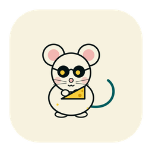

Is your AI subscription paying for itself?
nibble lives in your menu bar. It prices your AI usage at API rates and compares that with what your subscription costs. nibble, a cheese-loving mouse, eats through a wedge as your usage adds up.
Free and open source. For now, nibble counts Claude Code only.
Nibbling through Max
Claude Code this week, at API rates
$15.70
How it works
Three small steps, all on your computer
-
It reads the logs
Claude Code keeps a record of every response on your computer. nibble reads those logs where they are, so your usage never leaves your machine. It picks up your plan from Claude Code too.
-
It prices the tokens
Each response is priced at the API rate for its model. Input, output and cached tokens each have their own rate. The total is your API value: what the same work would have cost pay-as-you-go.
-
It compares that with your plan
Your plan’s monthly price is spread evenly over the weeks of a year. When this week’s API value passes that weekly share, the plan has paid for itself, and nibble tells you by how much.
The mascot
One mouse, four moods
nibble reads your subscription and tells you how it looks. It speaks up both ways: when a cheaper option would do, and when you need more room.
-
Nibbling
The everyday mood. Your usage is adding up and the week is on its way to paying off.
-
Paid off
This week’s usage is worth more than the week costs. nibble celebrates and shows a multiplier, like 1.4×.
-
Sleepy
A smaller plan, or paying the API directly, would have covered your last 30 days. nibble suggests the cheaper option.
-
Still hungry
You keep running into your limits. nibble suggests a bigger plan, when there is one.
In the menu bar
The wedge of cheese gets smaller as the week pays off. Once it has, you get an empty wedge with a check and the multiplier next to it.
- Full
- Two-thirds
- One-third
- Crumbs
- 1.2× Paid off
The fine print
What nibble counts, and what it doesn’t
- Claude Code only, for now. Usage comes from Claude Code’s logs on your computer. Chats on claude.ai and in the desktop app leave no local record, so they are not included. If you use those as well, your plan is worth more to you than nibble shows.
- Prices with their sources. API rates and plan prices come from Anthropic’s own pricing pages and ship inside the app, each with its source and the date it was checked.
- No guessing. A response from a model nibble can’t price yet is counted and mentioned, never given a made-up value.
- More to come. Other providers are planned, and so is running several subscriptions at once.

Download
Put nibble in your menu bar
macOS comes first. Windows and Linux too.
Builds are published on GitHub Releases. If the one for your system isn’t there yet, it is on its way. You can also build nibble from source.
nibble is free
If it is useful to you, you can buy me a coffee ☕. You can find my other apps at tonytang.dev/apps.